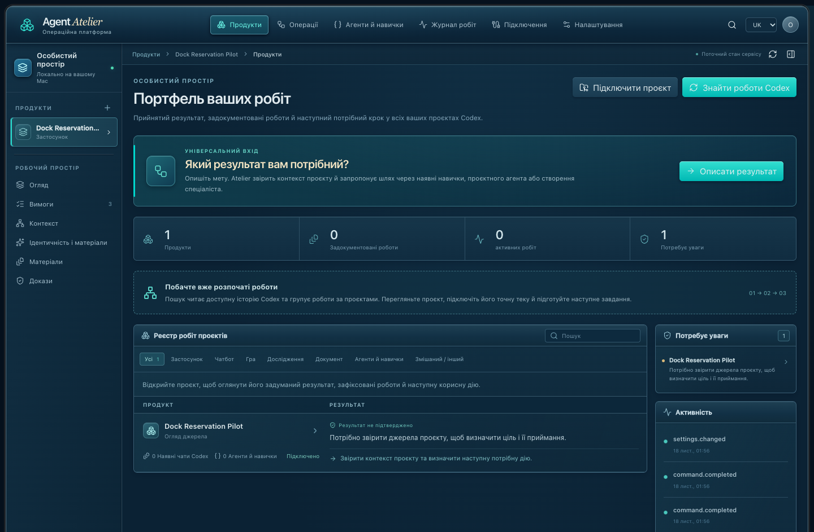
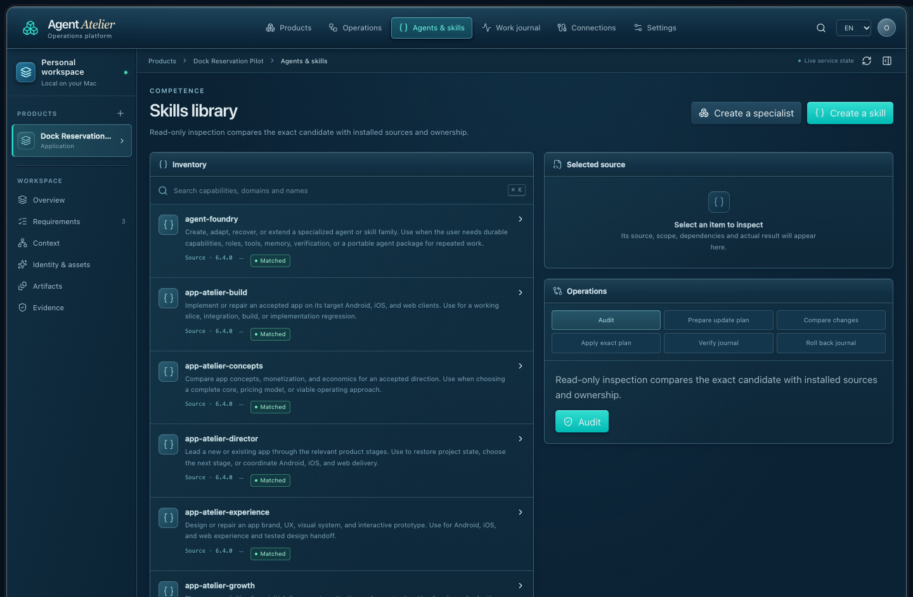

AI-КОМАНДА · СУМІСНА З CODEX
Одна мета. Цілісний шлях до результату.
Сплануйте роботу. Залучіть потрібних спеціалістів. Перевірте результат. Продовжуйте з того самого місця — зі джерелами, рішеннями й відновленням в одному локальному комплекті.
Комерційний release candidate. Ця сторінка не приймає оплату. Решта юридичних реквізитів продавця, години підтримки й дозвіл на публічні продажі ще потрібні.
Відкрити покупецький комплектПовний посібник продукту
До першого корисного результату
- Отримайте відповідний архів, документ придбання та довірену квитанцію підпису. Перевірте й підготуйте пакет.
- Відкрийте ПОЧАТИ.html. Запустіть Start.command: setup перевіряє Python і Codex, показує компоненти, цілі та конфлікти.
- Перегляньте аудит і встановіть точний план. Збережіть журнал. Відкрийте свіжий Codex і звірте реальні шляхи навичок і ролей.
- Скопіюйте examples/first-task у пробну папку. Попросіть встановлений Orchestrator виправити заголовок і зберегти notes.txt. Звірте обидва файли.
Установка та відновлення · Ліцензія й підтримка
Один пов’язаний комплект
Уточнюйте й вирішуйте
Воркшоп, бриф, PRFAQ та 18 редагованих шаблонів; відкриті рішення й огляди прив’язані до точних джерел.
Проєктуйте й будуйте
UX-маршрут із першоджерелами, продуктові й архітектурні контракти, сімейства App/ChatBot/Game і два конструктори.
Координуйте й відновлюйте
Окремі Git worktree, обсяг, контрольні точки й журнали оновлення. Перечитування невизначених зовнішніх дій.
Перевіряйте й передавайте
Окремі завдання для незалежної перевірки, докази кандидата й точний наступний крок для іншої людини.
Разова покупка. Придбана major-версія залишається вашою.
Робоча пропозиція в USD. Оновлення тієї самої major включені; наступна major — окрема пропозиція. Моделі й API використовують акаунти покупця.
Solo
$49
Один іменований користувач · кілька пристроїв
Особисті й клієнтські комерційні проєкти
Team
$149
До п’яти користувачів · одна організація
Особисті й клієнтські комерційні проєкти
Перед початком
Підписка Codex включена?
Ні. Потрібен ваш сумісний акаунт Codex. Використання моделей, API, хостинг та сторонні сервіси можуть оплачуватися окремо.
Що працює локально?
33 основні навички, Orchestrator, профіль і ролі. Панель Mac — окремий готовий runtime-кандидат, без npm чи TypeScript-збірки у покупця.
Що фактично підтримується?
RC перевіряється в названому локальному середовищі. Intel/M1, Linux і notarization мають окремі записи приймання. Звірте системні вимоги й RC-звіт.
Чи можна продавати результати?
Так, у межах редакції та прав на вихідні матеріали. Скопійовані ресурси самого комплекту зберігають свої умови; весь комплект не надається для перепродажу.
А якщо магазин недоступний?
Збережіть придбану версію, ліцензійний документ, пакет і резервні копії. Недоступний магазин не вимикає локальних прав і не змінює ваші проєкти.
Як отримати підтримку чи повернення?
Власник надав контакт підтримки й приватності: Oleksandr Hohaizel, aleksandrhohaizel@gmail.com. Документація та допомога з відтворюваними помилками включені; гарантованого часу відповіді немає. Роботу каналу, години, решту юридичних реквізитів і умови повернення ще треба підтвердити.
Перевірка та відновлення
Збережіть початковий пакет і точний журнал setup. Перевірте джерело та перечитайте невизначений результат перед повтором.

Оригінальна продуктова ілюстрація. Фактичні докази установки й задач надаються зі звітом кандидата.
Фактична робота кандидата
Реальні знімки панелі з ізольованими тестовими даними. Відео показує виконання setup, виявлення навичок і першу задачу в позначеному тестовому вікні; це інструмент демонстрації, а не інтерфейс продукту.


